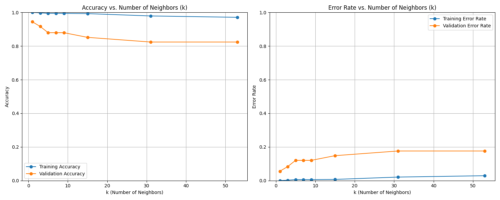
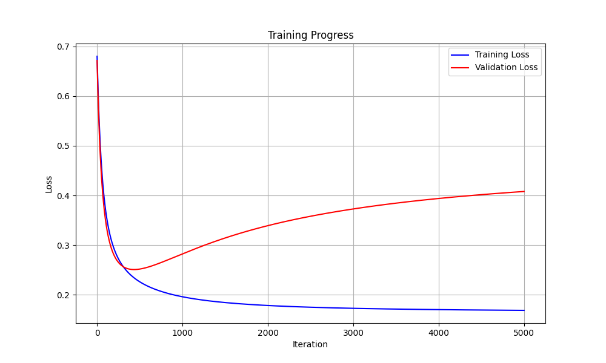
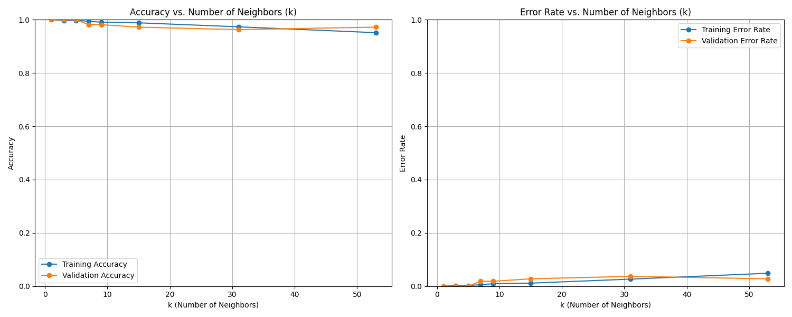
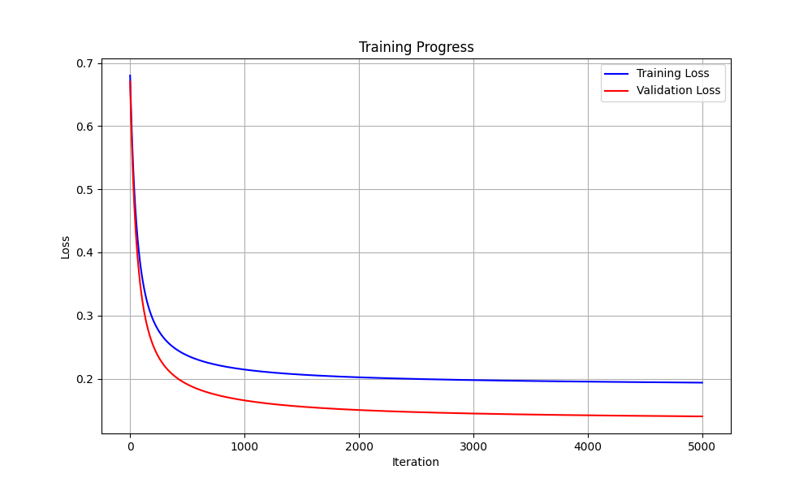

Jul 04, 2026 | 797 words | 8 min read
7.1.3. Task 3#
Learning Objectives#
Evaluate machine learning models using training, validation, and testing datasets
Compare model performance across different hyperparameters
Visualize model behavior using plots
Interpret trends such as overfitting and underfitting
Introduction#
In this task, you will evaluate and visualize the performance of both:
Your K-Nearest Neighbors (KNN) classifier from Section 7.1.1
Your logistic regression model from Section 7.1.2
This assignment focuses on model evaluation and interpretation rather than building new models from scratch. You will reuse functions from those tasks for loading and scaling the dataset, splitting the data, generating predictions, training logistic regression, and calculating accuracy and error.
Task Instructions#
Deliverable Reminder
Create a flowchart of your evaluation workflow and save it as tp3_team_3_teamnumber.pdf. Save your program as tp3_team_3_teamnumber.py.
Step 1: Evaluate KNN Across Multiple k Values#
Create a function named evaluate_knn_model.
Arguments:
k_values(list of int): List of k values to test.X_train(2D NumPy array of floats, shape(n_train, n_features)): Training feature matrix.y_train(1D NumPy array of ints, shape(n_train,)): Training labels.X_val(2D NumPy array of floats, shape(n_val, n_features)): Validation feature matrix.y_val(1D NumPy array of ints, shape(n_val,)): Validation labels.
Returns:
metrics(dict): dictionary with the following structure:
metrics = {
"acc": {"train_acc": [], "val_acc": []},
"error": {"train_error": [], "val_error": []}
}
For each value of k:
Predict labels on the training set using your KNN model
Predict labels on the validation set using your KNN model
Compute the accuracy and error rate for both sets
Append the results to the appropriate lists in
metrics
Use your previously implemented predict_labels_knn and
calculate_metrics functions.
Note
You will need the predict_labels_knn and calculate_metrics
functions developed in Section 7.1.1. Copy them into your program.
Step 2: Plot KNN Performance#
Create a function named plot_knn_performance.
Arguments:
metrics(dict): The dictionary returned byevaluate_knn_model.k_values(list of int): List of tested k values.
Returns:
None
This function should create one figure containing two side-by-side plots:
Accuracy vs. k
Error Rate vs. k
Each plot must include:
A training curve
A validation curve
A title
Labeled axes
A legend
Save the figure as train_val.png.
Step 3: Select the Best k Value#
Create a function named select_best_k.
Arguments:
k_values(list of int): List of tested k values.metrics(dict): The dictionary returned byevaluate_knn_model.
Returns:
best_k(int): The k value with the highest validation accuracy.
Use the validation accuracies in metrics["acc"]["val_acc"] to determine the
best value of k. If there is a tie, return the smallest k.
Step 4: Final KNN Evaluation on the Test Set#
Create a function named evaluate_knn_test_set.
Arguments:
X_test(2D NumPy array of floats, shape(n_test, n_features)): Test feature matrix.y_test(1D NumPy array of ints, shape(n_test,)): Test labels.X_train(2D NumPy array of floats, shape(n_train, n_features)): Training feature matrix.y_train(1D NumPy array of ints, shape(n_train,)): Training labels.best_k(int): Selected value ofk.
Returns:
test_accuracy(float): Test-set accuracy.test_error(float): Test-set error rate.
This function should predict the labels of the test set using the selected
best_k value, then compute and return the accuracy and error rate.
Step 5: Evaluate Logistic Regression#
Create a function named evaluate_logistic_model.
Arguments:
X_train(2D NumPy array of floats, shape(n_train, n_features)): Training feature matrix.y_train(1D NumPy array of ints, shape(n_train,)): Training labels.X_val(2D NumPy array of floats, shape(n_val, n_features)): Validation feature matrix.y_val(1D NumPy array of ints, shape(n_val,)): Validation labels.X_test(2D NumPy array of floats, shape(n_test, n_features)): Test feature matrix.y_test(1D NumPy array of ints, shape(n_test,)): Test labels.w(1D NumPy array of floats, shape(n_features,)): Trained weights.b(float): Trained bias.
Returns:
metrics(dict): dictionary with the following structure:
metrics = {
"train": {"accuracy": 0.0, "error": 0.0},
"val": {"accuracy": 0.0, "error": 0.0},
"test": {"accuracy": 0.0, "error": 0.0},
}
Use evaluate_logistic_regression to compute the accuracy and error rate
for the training, validation, and test sets.
Note
You will need the evaluate_logistic_regression function developed in
Section 7.1.2. Copy it into your program.
Step 6: Plot Logistic Regression Training Behavior#
Create a function named plot_logistic_training.
Arguments:
loss_history(list of float): The training loss values produced during training.val_loss_history(list of float): The validation loss values produced during training.
Returns:
None
This function should create a plot of Loss vs. Iteration. The plot must include:
A title
Labeled axes
A training loss curve
A validation loss curve
Save the figure as training_progress.png.
Step 7: Main Function#
Create a main function that collects the following inputs from the user:
The path of the CSV file containing the feature dataset
The choice for shuffling the dataset
The seed for shuffling the dataset and model reproducibility
The function should then:
Load the dataset using
load_datasetfrom Section 7.1.1Split the data into training, validation, and testing sets
Evaluate KNN across several values of
ksuch as[1, 3, 5, 7, 9, 15, 31, 53]Plot the KNN training and validation performance
Determine the best
kusing validation accuracyEvaluate the final KNN model on the test set
Train the logistic regression model using a learning rate of \(0.01\) and \(5000\) iterations, as described in Section 7.1.2
Evaluate logistic regression on the training, validation, and test sets
Plot the logistic regression training loss
Ensure that your code output matches the sample output provided below.
Sample Output#
Main-function inputs for the Team 3 model evaluation and plotting workflow. Use the values in Table 7.7 below to test your program.
Case |
dataset |
shuffle |
seed |
|---|---|---|---|
1 |
img_features.csv |
no |
42 |
2 |
img_features.csv |
yes |
42 |
Ensure your program’s output matches the provided samples exactly. This includes all characters, white space, and punctuation. In the samples, user input is highlighted like this for clarity, but your program should not highlight user input in this way.
Case 1 Sample Output
$ python3 tp3_team_3_teamnumber.py Enter the path to the feature dataset: img_features.csv Shuffle the dataset? (yes/no): no Enter a seed for loading the dataset: 42
Data loaded and split into
Training set: size: 864 Validation set: size: 108 Test set: size: 108
KNN Validation Curve Summary k = 1: train accuracy = 1.0000, validation accuracy = 0.9444 k = 3: train accuracy = 0.9977, validation accuracy = 0.9167 k = 5: train accuracy = 0.9942, validation accuracy = 0.8796 k = 7: train accuracy = 0.9942, validation accuracy = 0.8796 k = 9: train accuracy = 0.9942, validation accuracy = 0.8796 k = 15: train accuracy = 0.9931, validation accuracy = 0.8519 k = 31: train accuracy = 0.9792, validation accuracy = 0.8241 k = 53: train accuracy = 0.9711, validation accuracy = 0.8241
Based on the plots, the best k appears to be: 1
--- Final KNN Model Performance --- Test Set Accuracy: 0.9630 Test Set Error Rate: 0.0370
Training logistic regression model with learning rate = 0.01 and num_iterations = 5000...
Iteration 0, Train Loss: 0.6802, Val Loss: 0.6716 Iteration 100, Train Loss: 0.3697, Val Loss: 0.3483 Iteration 200, Train Loss: 0.2919, Val Loss: 0.2791 Iteration 300, Train Loss: 0.2581, Val Loss: 0.2572 Iteration 400, Train Loss: 0.2388, Val Loss: 0.2511 Iteration 500, Train Loss: 0.2260, Val Loss: 0.2518 Iteration 600, Train Loss: 0.2168, Val Loss: 0.2559 Iteration 700, Train Loss: 0.2097, Val Loss: 0.2617 Iteration 800, Train Loss: 0.2042, Val Loss: 0.2683 Iteration 900, Train Loss: 0.1997, Val Loss: 0.2753 Iteration 1000, Train Loss: 0.1960, Val Loss: 0.2824 Iteration 1100, Train Loss: 0.1928, Val Loss: 0.2893 Iteration 1200, Train Loss: 0.1902, Val Loss: 0.2960 Iteration 1300, Train Loss: 0.1880, Val Loss: 0.3024 Iteration 1400, Train Loss: 0.1860, Val Loss: 0.3086 Iteration 1500, Train Loss: 0.1843, Val Loss: 0.3144 Iteration 1600, Train Loss: 0.1828, Val Loss: 0.3199 Iteration 1700, Train Loss: 0.1815, Val Loss: 0.3252 Iteration 1800, Train Loss: 0.1804, Val Loss: 0.3301 Iteration 1900, Train Loss: 0.1793, Val Loss: 0.3348 Iteration 2000, Train Loss: 0.1784, Val Loss: 0.3392 Iteration 2100, Train Loss: 0.1776, Val Loss: 0.3434 Iteration 2200, Train Loss: 0.1768, Val Loss: 0.3474 Iteration 2300, Train Loss: 0.1761, Val Loss: 0.3511 Iteration 2400, Train Loss: 0.1755, Val Loss: 0.3547 Iteration 2500, Train Loss: 0.1749, Val Loss: 0.3581 Iteration 2600, Train Loss: 0.1744, Val Loss: 0.3614 Iteration 2700, Train Loss: 0.1739, Val Loss: 0.3644 Iteration 2800, Train Loss: 0.1735, Val Loss: 0.3674 Iteration 2900, Train Loss: 0.1731, Val Loss: 0.3702 Iteration 3000, Train Loss: 0.1727, Val Loss: 0.3728 Iteration 3100, Train Loss: 0.1724, Val Loss: 0.3754 Iteration 3200, Train Loss: 0.1720, Val Loss: 0.3778 Iteration 3300, Train Loss: 0.1717, Val Loss: 0.3801 Iteration 3400, Train Loss: 0.1715, Val Loss: 0.3824 Iteration 3500, Train Loss: 0.1712, Val Loss: 0.3845 Iteration 3600, Train Loss: 0.1709, Val Loss: 0.3865 Iteration 3700, Train Loss: 0.1707, Val Loss: 0.3885 Iteration 3800, Train Loss: 0.1705, Val Loss: 0.3904 Iteration 3900, Train Loss: 0.1703, Val Loss: 0.3922 Iteration 4000, Train Loss: 0.1701, Val Loss: 0.3939 Iteration 4100, Train Loss: 0.1699, Val Loss: 0.3956 Iteration 4200, Train Loss: 0.1697, Val Loss: 0.3972 Iteration 4300, Train Loss: 0.1696, Val Loss: 0.3987 Iteration 4400, Train Loss: 0.1694, Val Loss: 0.4002 Iteration 4500, Train Loss: 0.1693, Val Loss: 0.4016 Iteration 4600, Train Loss: 0.1691, Val Loss: 0.4030 Iteration 4700, Train Loss: 0.1690, Val Loss: 0.4043 Iteration 4800, Train Loss: 0.1688, Val Loss: 0.4056 Iteration 4900, Train Loss: 0.1687, Val Loss: 0.4068
Final Logistic Regression Evaluation: -------------------------------------------------- Training Set - Accuracy: 0.9317 (93.17%), Error Rate: 0.0683 (6.83%) Validation Set - Accuracy: 0.8519 (85.19%), Error Rate: 0.1481 (14.81%) Test Set - Accuracy: 0.8981 (89.81%), Error Rate: 0.1019 (10.19%)
Model Summary Best KNN validation accuracy: 0.9444 Logistic regression validation accuracy: 0.8519 KNN test accuracy: 0.9630 Logistic regression test accuracy: 0.8981

Fig. 7.2 Case_1_train_val.png#

Fig. 7.3 Case_1_training_progress.png#
Case 2 Sample Output
$ python3 tp3_team_3_teamnumber.py Enter the path to the feature dataset: img_features.csv Shuffle the dataset? (yes/no): yes Enter a seed for loading the dataset: 42
Data loaded and split into
Training set: size: 864 Validation set: size: 108 Test set: size: 108
KNN Validation Curve Summary k = 1: train accuracy = 1.0000, validation accuracy = 1.0000 k = 3: train accuracy = 0.9977, validation accuracy = 1.0000 k = 5: train accuracy = 0.9977, validation accuracy = 1.0000 k = 7: train accuracy = 0.9942, validation accuracy = 0.9815 k = 9: train accuracy = 0.9907, validation accuracy = 0.9815 k = 15: train accuracy = 0.9884, validation accuracy = 0.9722 k = 31: train accuracy = 0.9734, validation accuracy = 0.9630 k = 53: train accuracy = 0.9514, validation accuracy = 0.9722
Based on the plots, the best k appears to be: 1
--- Final KNN Model Performance --- Test Set Accuracy: 1.0000 Test Set Error Rate: 0.0000
Training logistic regression model with learning rate = 0.01 and num_iterations = 5000...
Iteration 0, Train Loss: 0.6802, Val Loss: 0.6705 Iteration 100, Train Loss: 0.3669, Val Loss: 0.3325 Iteration 200, Train Loss: 0.2935, Val Loss: 0.2533 Iteration 300, Train Loss: 0.2634, Val Loss: 0.2205 Iteration 400, Train Loss: 0.2470, Val Loss: 0.2026 Iteration 500, Train Loss: 0.2367, Val Loss: 0.1912 Iteration 600, Train Loss: 0.2296, Val Loss: 0.1832 Iteration 700, Train Loss: 0.2244, Val Loss: 0.1772 Iteration 800, Train Loss: 0.2203, Val Loss: 0.1725 Iteration 900, Train Loss: 0.2171, Val Loss: 0.1688 Iteration 1000, Train Loss: 0.2145, Val Loss: 0.1657 Iteration 1100, Train Loss: 0.2124, Val Loss: 0.1631 Iteration 1200, Train Loss: 0.2105, Val Loss: 0.1609 Iteration 1300, Train Loss: 0.2090, Val Loss: 0.1589 Iteration 1400, Train Loss: 0.2076, Val Loss: 0.1573 Iteration 1500, Train Loss: 0.2065, Val Loss: 0.1558 Iteration 1600, Train Loss: 0.2054, Val Loss: 0.1545 Iteration 1700, Train Loss: 0.2045, Val Loss: 0.1533 Iteration 1800, Train Loss: 0.2037, Val Loss: 0.1523 Iteration 1900, Train Loss: 0.2029, Val Loss: 0.1513 Iteration 2000, Train Loss: 0.2023, Val Loss: 0.1505 Iteration 2100, Train Loss: 0.2017, Val Loss: 0.1497 Iteration 2200, Train Loss: 0.2011, Val Loss: 0.1490 Iteration 2300, Train Loss: 0.2006, Val Loss: 0.1483 Iteration 2400, Train Loss: 0.2001, Val Loss: 0.1477 Iteration 2500, Train Loss: 0.1997, Val Loss: 0.1472 Iteration 2600, Train Loss: 0.1992, Val Loss: 0.1467 Iteration 2700, Train Loss: 0.1989, Val Loss: 0.1462 Iteration 2800, Train Loss: 0.1985, Val Loss: 0.1457 Iteration 2900, Train Loss: 0.1982, Val Loss: 0.1453 Iteration 3000, Train Loss: 0.1978, Val Loss: 0.1449 Iteration 3100, Train Loss: 0.1975, Val Loss: 0.1446 Iteration 3200, Train Loss: 0.1972, Val Loss: 0.1442 Iteration 3300, Train Loss: 0.1970, Val Loss: 0.1439 Iteration 3400, Train Loss: 0.1967, Val Loss: 0.1436 Iteration 3500, Train Loss: 0.1965, Val Loss: 0.1433 Iteration 3600, Train Loss: 0.1962, Val Loss: 0.1431 Iteration 3700, Train Loss: 0.1960, Val Loss: 0.1428 Iteration 3800, Train Loss: 0.1958, Val Loss: 0.1426 Iteration 3900, Train Loss: 0.1956, Val Loss: 0.1423 Iteration 4000, Train Loss: 0.1954, Val Loss: 0.1421 Iteration 4100, Train Loss: 0.1952, Val Loss: 0.1419 Iteration 4200, Train Loss: 0.1950, Val Loss: 0.1417 Iteration 4300, Train Loss: 0.1949, Val Loss: 0.1415 Iteration 4400, Train Loss: 0.1947, Val Loss: 0.1413 Iteration 4500, Train Loss: 0.1945, Val Loss: 0.1412 Iteration 4600, Train Loss: 0.1944, Val Loss: 0.1410 Iteration 4700, Train Loss: 0.1942, Val Loss: 0.1408 Iteration 4800, Train Loss: 0.1941, Val Loss: 0.1407 Iteration 4900, Train Loss: 0.1940, Val Loss: 0.1405
Final Logistic Regression Evaluation: -------------------------------------------------- Training Set - Accuracy: 0.9086 (90.86%), Error Rate: 0.0914 (9.14%) Validation Set - Accuracy: 0.9444 (94.44%), Error Rate: 0.0556 (5.56%) Test Set - Accuracy: 0.9074 (90.74%), Error Rate: 0.0926 (9.26%)
Model Summary Best KNN validation accuracy: 1.0000 Logistic regression validation accuracy: 0.9444 KNN test accuracy: 1.0000 Logistic regression test accuracy: 0.9074

Fig. 7.4 Case_2_train_val.png#

Fig. 7.5 Case_2_training_progress.png#
Deliverables |
Description |
|---|---|
tp3_team_3_teamnumber.pdf |
Flowchart(s) for this task. |
tp3_team_3_teamnumber.py |
Your completed Python code. |